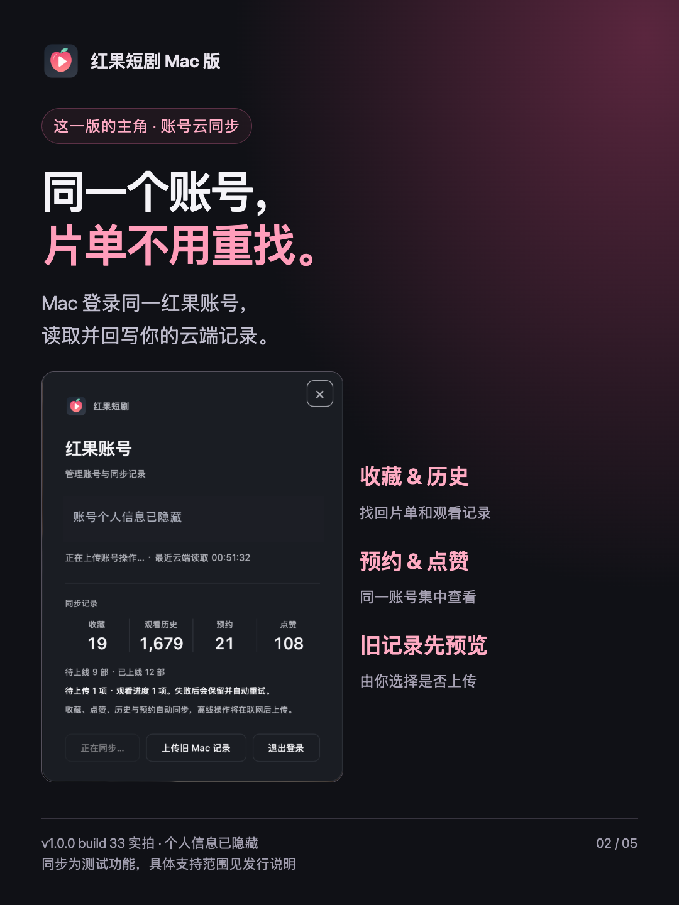
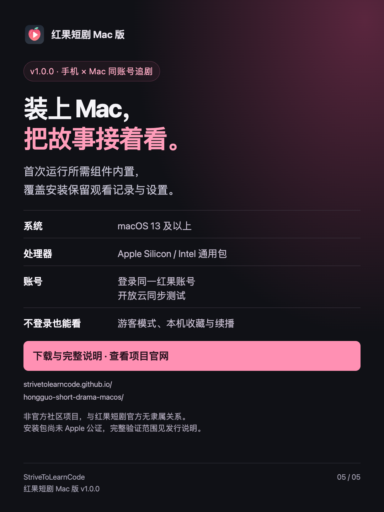

<!doctype html><html lang="zh-CN"><meta charset="utf-8"><meta name="viewport" content="width=device-width,initial-scale=1"><title>v1.0.0 宣传图 · 红果短剧 Mac 版</title><style>body{margin:0;padding:24px;background:#111217;color:#eee;font-family:system-ui}main{max-width:1100px;margin:auto}.grid{display:grid;grid-template-columns:1fr 1fr;gap:24px}img{width:100%;height:auto;border-radius:14px}a{color:#ff9cbc}p{line-height:1.8}@media(max-width:650px){.grid{grid-template-columns:1fr}}</style><main><h1>红果短剧 Mac 版 v1.0.0 宣传图</h1><p>手机 × Mac 双端同步追剧。使用本次新版实际界面，个人账号信息已隐藏。点击图片查看或保存原图。</p><div class="grid"><a href="assets/v1.0.0-b33-xhs-01-cover.png"></a><a href="assets/v1.0.0-b33-xhs-02-sync.png"></a><a href="assets/v1.0.0-b33-xhs-03-history.png"></a><a href="assets/v1.0.0-b33-xhs-04-mini.png"></a><a href="assets/v1.0.0-b33-xhs-05-install.png"></a></div><p><a href="index.html">返回下载官网</a></p></main></html>